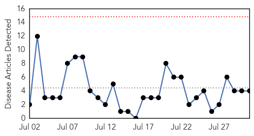
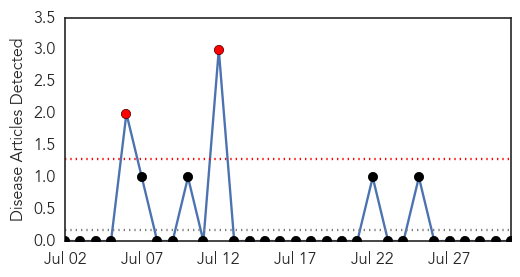

Meningitis
30-Day Web Trend
0 alerts, 0 warnings

30-Day Twitter Trend
1 alerts, 0 warnings

Article Locations

Article Confidences

Top Articles:
- 0.993
- Before Legionnaire’s: A Brief History of NYC Outbreaks
- 0.951
- Sydneysiders look out for symptoms of meningococcal disease after university student diagnosed
- 0.951
- Sydneysiders look out for symptoms of meningococcal disease after university student diagnosed
- 0.729
- Argyll News: New meningitis vaccination programme for 14-18 year olds starts today in ScotlandFor Argyll
Top Tweets:
-
No tweets found for Jul 31, 2015
Hemmorhagic Fever
30-Day Web Trend
2 alerts, 0 warnings

30-Day Twitter Trend
0 alerts, 0 warnings

Article Locations

Article Confidences

Top Articles:
-
No articles found for Jul 31, 2015
Top Tweets:
-
No tweets found for Jul 31, 2015